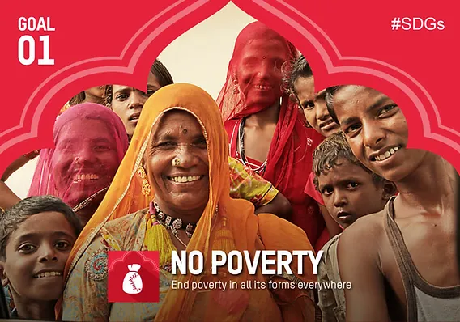

The 2030 Agenda for Sustainable Development aims to eradicate extreme poverty, defined as living on less than $2.15 per day, by 2030. Despite significant progress over decades, COVID-19 reversed these gains, increasing poverty levels and pushing 670 million people into extreme poverty by 2022. If trends continue, 7% of the global population may still face extreme poverty by 2030, with sub-Saharan Africa disproportionately affected. Rising hunger and food prices exacerbate this challenge. Poverty stems from unemployment, social exclusion, and vulnerability to crises, highlighting the need for strong social protection systems. While governments, the private sector, and science have contributed to poverty reduction, sustained universal social protection and active public engagement in policymaking are essential to drive transformational change and achieve sustainable development goals.